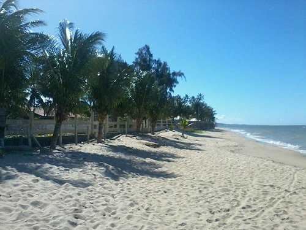
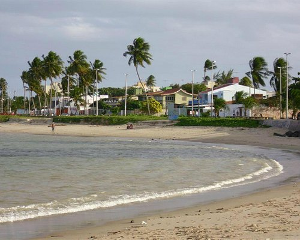

Para quem aprecia uma bela praia e roteiros urbanos, Paulista é uma excelente opção, com inúmeros cartões postais.
Com areia clara e águas cristalinas, a praia de Maria Farinha é considerado uma das praias mais belas do litoral pernambucano.Maria Farinha tem além de uma bela vegetação rasteira, o balneário possui altos coqueiros, mar aberto e o discreto limite natural do Rio Timbó, ideal para passeios náuticos.
Temos também a Praia do Janga,uma praia tranquila de mediana extensão, é conhecida como um dos refúgios da cidade. De clima agradável, costuma receber um bom número de turistas durante a alta temporada, que aproveitam para relaxar, tomar um refrescante banho de mar e repor as energias. É uma boa opção para os que preferem lugares menos movimentados, seja para descansar ou praticar algum esporte.
A cidade de Paulista fica na Região Metropolitana do Recife, e possui uma extensa faixa litorânea com 14 km de praias de águas mornas e azuis.Bem próxima do Recife, conta com praias de águas calmas, por isso é eleita por muitos pernambucanos como melhor local para moradia. Uma das atrações da cidade é o parque aquático que atrai centenas de visitantes para a cidade, sobretudo nos finais de semana, quando as praias do Janga, Pau Amarelo e Maria Farinha são visitadas por centenas de pessoas que se reúnem em diversas palhoças e barzinhos instalados à beira-mar. As praias de Paulista fazem parte do maior polo de lazer náutico do Nordeste.